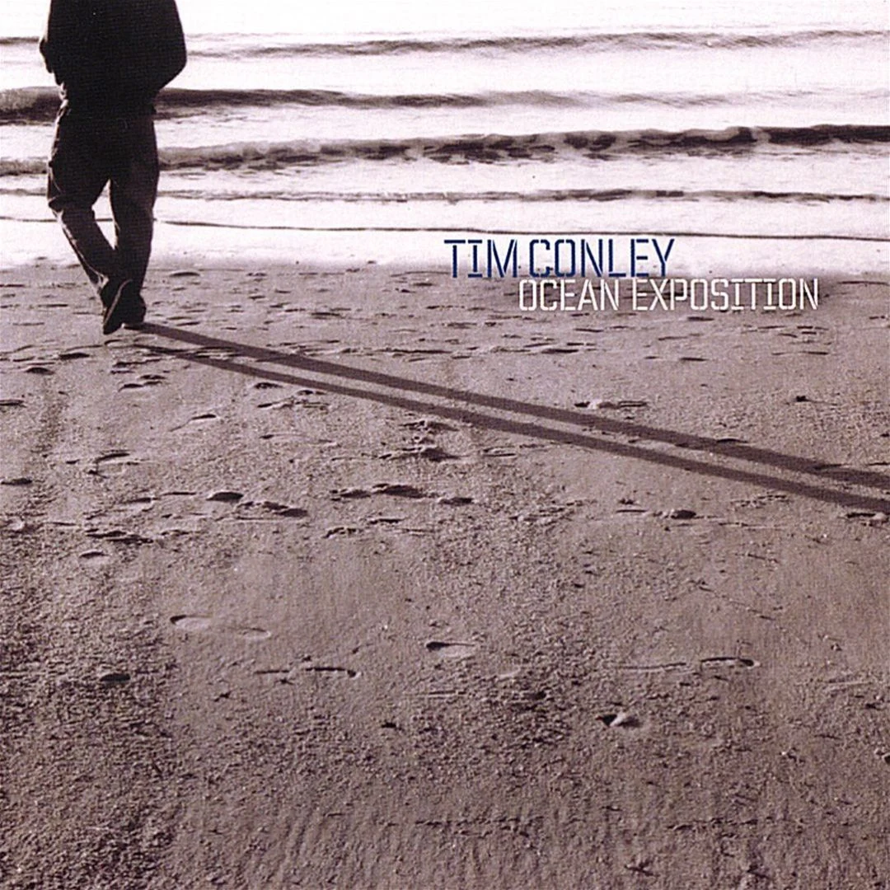

Explore album /\\\
Explore album /\\\Latest release
Battle Hymns of the Republic
A spiritual protest for unity, equality, facts, justice and empathy.
FeaturingJimetta Rose · Dwight Trible · Brian Marsella · Maxwell Hallett · and more
Discography
Composition without borders—jazz, electronic music, orchestration, beats and improvisation.
Explore album /\\\Latest release
A spiritual protest for unity, equality, facts, justice and empathy.
FeaturingJimetta Rose · Dwight Trible · Brian Marsella · Maxwell Hallett · and more
 Explore album /\\\
Explore album /\\\2018 · LP
A 16-track cosmic reinterpretation of the Thelonious Monk songbook.
FeaturingChris Speed · Brian Marsella · Makaya McCraven · Jason Fraticelli · Dan Rosenboom · and more
 Explore album /\\\
Explore album /\\\2016 · LP
A conceptual album shaped as a three-act play, released via Alpha Pup Records.
FeaturingTaylor McFerrin · Louis Cole · Tim Lefebvre · Makaya McCraven · Fresh Cut Orchestra · Andrée Belle · and more
 Explore album /\\\
Explore album /\\\ Explore album /\\\
Explore album /\\\EP
The first conceptual continuation of Omni.
FeaturingMAST ensemble · additional collaborators across the Omniverse sessions
 Explore album /\\\
Explore album /\\\EP
The second conceptual continuation of Omni.
FeaturingMAST ensemble · additional collaborators across the Omniverse sessions
 Explore album /\\\
Explore album /\\\EP
A MAST interpretation of Coltrane’s spiritual masterwork.
FeaturingElliott Levin
 Explore album /\\\
Explore album /\\\Tim Conley
A collaborative improvisational work.
FeaturingTim Conley · Elliott Levin · Dan Rosenboom · Matt Mayhall

Explore album /\\\Tim Conley
An expansive Tim Conley release rooted in composition and improvisation.
FeaturingJon Thompson · Jason Fraticelli · Joe Falcey
Selected credits